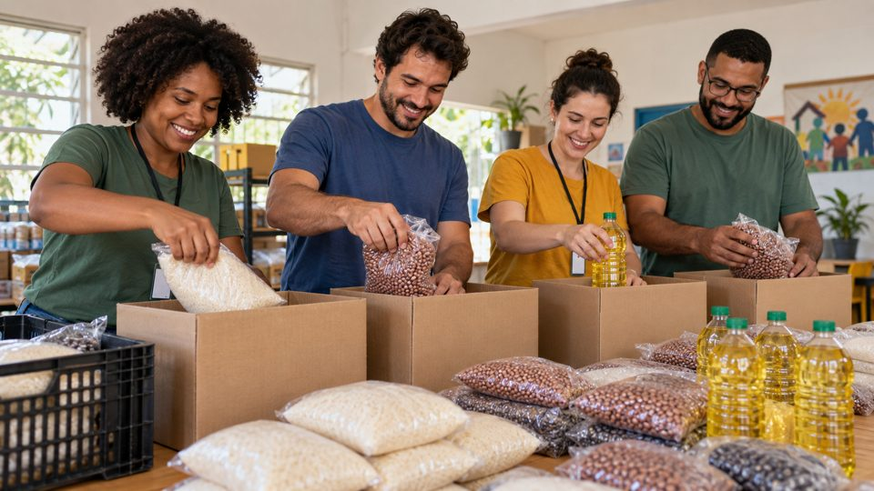

Início
Quem somos
A Conexão Solidária é uma ONG fictícia que apoia famílias por meio de ações de solidariedade, educação e cidadania.

Nossa missão
Apoiar famílias e ampliar oportunidades com projetos sociais e participação da comunidade.
Como ajudar
Participe como voluntário ou conheça nossas campanhas de doação.
Contato
Dados ilustrativos deste projeto acadêmico:
E-mail: contato@example.org
Telefone: (00) 00000-0000
Endereço: Rua Exemplo, 123 — Cidade Exemplo